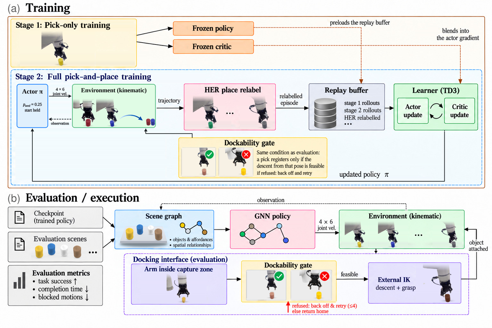
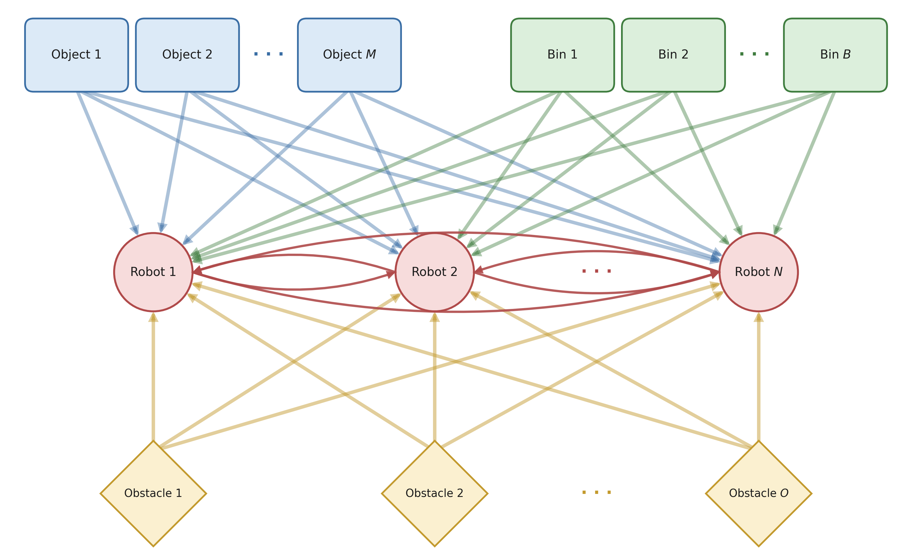
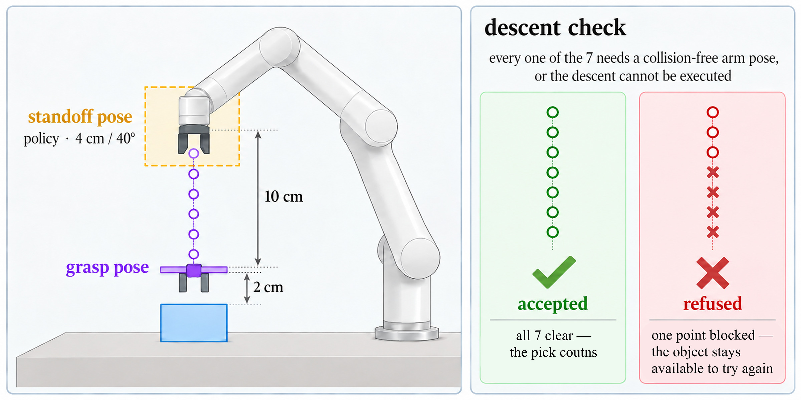

Multi-robot pick-and-place requires robots to jointly decide which objects to manipulate, when to execute each sub-task, and how to move without collisions in a shared workspace. This problem becomes particularly challenging when multiple objects must be sequentially picked and placed, as the success of later stages depends on the completion of earlier ones.
We propose a reinforcement learning framework for multi-robot multi-stage pick-and-place that jointly learns task allocation, scheduling, and motion planning within a unified policy. The policy uses a Graph Neural Network to capture the relational structure among robots, objects, targets, and obstacles, enabling coordinated decision making across multiple robots and tasks. To address the exploration difficulty caused by the sequential dependency between picking and placing, we employ a two-stage hindsight experience replay strategy to facilitate learning from intermediate task states. We further combine the learned policy with a conventional inverse kinematics controller to improve execution accuracy.
The policy is coupled to a classical inverse-kinematics solver through a docking interface: it commands a standoff pose, and a pick is admitted only when the final descent from that pose is feasible, so that simulated success remains executable on hardware. Experiments show that our method achieves a 92.5% success rate with four robots and eight objects in simulation, completing tasks 3.5× faster than a serial planning baseline given three times the time budget. The proposed method also transfers zero-shot to other team sizes and object counts and, deployed on a physical cell of 4 robots, clears 92% of 50 real-world scenes and places 97.9% of 480 objects with no executed collisions.
Coordinating multiple robots on a multi-stage pick-and-place task requires solving three coupled problems at once: task allocation (which robot handles which object), scheduling (when each pick and place sub-task should run given the sequential dependency between stages), and motion planning (how robots move without colliding in a shared workspace). Prior work typically handles these separately with hand-designed heuristics; we instead learn all three jointly with a single reinforcement learning policy, built on two key ideas.

The figure above summarizes the full pipeline end to end. The two subsections below detail each half of it: first the graph scene representation that the GNN policy reasons over, then the coarse-to-fine handoff between the learned policy and the classical IK solver that executes it on hardware.
We represent the whole scene — every robot, object, bin, and obstacle — as a single graph, and a Graph Neural Network propagates information across it. This lets one centralized policy reason jointly about which robot should approach which object, when, and how to move without colliding with the others, instead of relying on a hand-designed allocation and scheduling rule. Because the representation is not tied to a fixed number of nodes, the same policy generalizes zero-shot to different team sizes and object counts.

The learned policy only needs to get a robot close: it commands a coarse standoff pose above an object rather than the exact grasp itself. A classical inverse-kinematics solver then takes over for the last few centimeters, and a pick is only accepted once a collision-free descent from that standoff to the grasp is actually feasible. This coarse-to-fine handoff keeps the policy free to focus on high-level coordination while guaranteeing that every "successful" pick in simulation is one a real arm can actually execute, closing the gap between simulated and real-world performance.

We compare MultiPnP against two hand-designed planners (serial and parallel) and a reaching policy, i.e. the pick-only policy we train first as a prior for MultiPnP, run on the full task by switching its target to the bin after each pick. MultiPnP finishes a scene in 15 s on average, 3.5× faster than the serial planner (53 s), which only succeeds when allowed a 3× longer time limit. The parallel planner is faster than the serial one but fails more often, and the reaching policy completes no scene.
The coarse-to-fine docking scheme is what makes simulated success transfer to real execution: without it, the success rate roughly halves. Removing the two-stage training strategy, or the place-phase carry signal, is even more severe — the policy fails to complete the task at all.
Our pipeline is applicable to randomized scenes with varying object and bin configurations, including their positions and orientations.
Our pipeline is applicable to a variable number of robots, without retraining.
Our pipeline is applicable to a variable number of objects, without retraining.
Our pipeline extends to sorting objects of different types into their matching bins. Sorting changes the goal rather than the scene graph, so zero-shot transfer does not cover it; a brief fine-tuning of the same policy is sufficient.
The same policy, deployed unchanged on a physical cell of 4 robot arms, clears 92% of 50 randomized real-world scenes and places 97.9% of 480 objects — with zero executed collisions. This confirms that coordination learned entirely in simulation transfers directly to hardware.
Our policy achieves complete multi-robot, multi-object pick-and-place execution. (a) shows the resulting behavior in MuJoCo simulation; (b) shows the same policy deployed, unchanged, on the real-world robot cell.
We validate this behavior robustly, running the policy across many repeated trials.
@article{anonymous2026multipnp,
author = {Anonymous},
title = {MultiPnP: Learning Task Allocation, Scheduling, and Motion Planning for Multi-Robot Pick-and-Place},
journal = {[venue]},
year = {[XXXX]},
}